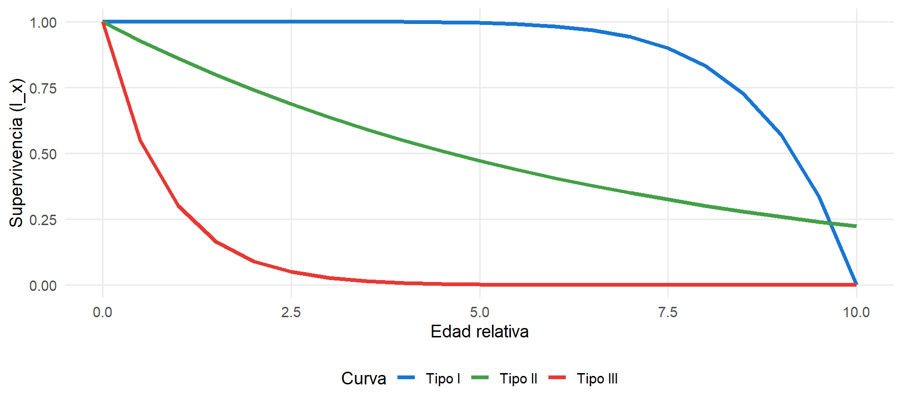

Clase 1.3 — Tablas de vida y curvas de supervivencia
04/11/2026
Clase 1.3 — Demografía
Carlos Iván Espinosa Universidad Técnica Particular de Loja
Al finalizar esta sesión, podrás:
En la hoya de Loja, 1.000 semillas de Cedrela montana germinan. Al año siguiente, solo sobreviven 500 plántulas. Al segundo año, 250. Al tercero, 125.
¿Qué le pasa a esta población? ¿Crece, decrece o se mantiene estable?
Saber cuántos individuos hay (densidad, abundancia) no basta.
Para saber si una población crece o decrece, necesitamos saber:
Eso es la demografía.
La demografía es el estudio de los cambios en el tamaño y la estructura de las poblaciones a lo largo del tiempo.
Se centra en dos procesos:
La demografía cuantifica lo que el fitness describía conceptualmente.
| Lectura 1.2 (fitness) | Lectura 1.3 (demografía) |
|---|---|
| Supervivencia | Tablas de vida |
| Fecundidad | \(m_x\) por clase |
| Trade-offs | Esfuerzo reproductivo por clase |
| Valor reproductivo | \(R_0\), \(T\), \(r\) |
El fitness es el concepto; la demografía es la herramienta para medirlo.
Una tabla de vida resume la supervivencia y la fecundidad de una población a lo largo del tiempo.
Es la herramienta central de la demografía.
Se sigue a un grupo de individuos nacidos en el mismo período desde el nacimiento hasta la muerte del último.
Ventaja: refleja la experiencia real de una generación.
Desventaja: requiere mucho tiempo.
Ejemplo local: seguir una cohorte de plántulas de Cedrela montana durante años.
Se registra la mortalidad y la fecundidad de individuos de distintas edades en un solo momento.
Ventaja: se puede construir en un solo muestreo.
Desventaja: asume que las tasas son constantes en el tiempo.
Ejemplo local: registrar la edad de todos los individuos de Tremarctos ornatus en un solo muestreo.
Para especies de vida larga (árboles, mamíferos), se prefiere la tabla de tiempo específico.
Tenemos una cohorte de Cedrela montana en la hoya de Loja:
| Edad (años) | Individuos que sobreviven (\(n_x\)) |
|---|---|
| 0 | 1.000 |
| 1 | 500 |
| 2 | 250 |
| 3 | 125 |
| 4 | 50 |
| 5 | 10 |
Pregunta: ¿cuántos individuos mueren entre la edad 0 y la edad 1?
| Edad | \(n_x\) | \(l_x\) |
|---|---|---|
| 0 | 1.000 | 1,00 |
| 1 | 500 | 0,50 |
| 2 | 250 | 0,25 |
| 3 | 125 | 0,125 |
| 4 | 50 | 0,05 |
| 5 | 10 | 0,01 |
\[l_x = \frac{n_x}{n_0}\]
\(l_x\) es la probabilidad de sobrevivir hasta la edad \(x\).
| Edad | \(n_x\) | \(l_x\) | \(d_x\) | \(q_x\) |
|---|---|---|---|---|
| 0 | 1.000 | 1,00 | 500 | 0,50 |
| 1 | 500 | 0,50 | 250 | 0,50 |
| 2 | 250 | 0,25 | 125 | 0,50 |
| 3 | 125 | 0,125 | 75 | 0,60 |
| 4 | 50 | 0,05 | 40 | 0,80 |
| 5 | 10 | 0,01 | — | — |
\[d_x = n_x - n_{x+1}\] \[q_x = \frac{d_x}{n_x}\]
La mortalidad aumenta con la edad: 50% en los primeros años, 80% a los 4 años.
Supongamos que en nuestra población de Cedrela:
| Edad | \(n_x\) | \(l_x\) | \(d_x\) | \(q_x\) | \(m_x\) |
|---|---|---|---|---|---|
| 0 | 1.000 | 1,00 | 500 | 0,50 | 0 |
| 1 | 500 | 0,50 | 250 | 0,50 | 0 |
| 2 | 250 | 0,25 | 125 | 0,50 | 5 |
| 3 | 125 | 0,125 | 75 | 0,60 | 20 |
| 4 | 50 | 0,05 | 40 | 0,80 | 30 |
| 5 | 10 | 0,01 | — | — | 40 |
\[R_0 = \sum l_x \cdot m_x\]
| Edad | \(l_x\) | \(m_x\) | \(l_x \cdot m_x\) |
|---|---|---|---|
| 0 | 1,00 | 0 | 0,00 |
| 1 | 0,50 | 0 | 0,00 |
| 2 | 0,25 | 5 | 1,25 |
| 3 | 0,125 | 20 | 2,50 |
| 4 | 0,05 | 30 | 1,50 |
| 5 | 0,01 | 40 | 0,40 |
| Total | \(R_0 = 5,65\) |
\(R_0 > 1\) → la población crece.
\[T = \frac{\sum x \cdot l_x \cdot m_x}{R_0}\]
| Edad | \(x\) | \(l_x \cdot m_x\) | \(x \cdot l_x \cdot m_x\) |
|---|---|---|---|
| 0 | 0 | 0,00 | 0,00 |
| 1 | 1 | 0,00 | 0,00 |
| 2 | 2 | 1,25 | 2,50 |
| 3 | 3 | 2,50 | 7,50 |
| 4 | 4 | 1,50 | 6,00 |
| 5 | 5 | 0,40 | 2,00 |
| Total | \(T = 3,18\) años |
En promedio, una hembra produce sus descendientes a los 3,18 años.
\[r \approx \frac{\ln(R_0)}{T}\]
\[r \approx \frac{\ln(5,65)}{3,18} \approx 0,54 \text{ por año}\]
Interpretación:
\(r\) es la misma tasa que veremos en los modelos de crecimiento exponencial.
> Si la supervivencia de las plántulas se redujera a la mitad (de 0,50 a 0,25), ¿qué pasaría con \(R_0\)? ¿Y con \(r\)?
Las curvas de supervivencia representan \(l_x\) contra la edad \(x\).

La mayoría de los individuos sobrevive hasta la edad adulta y muere en edades avanzadas.
Ejemplo local: Tremarctos ornatus. Pocas crías, pero alta inversión parental.
Característica: pocos descendientes, mucho cuidado parental.
La probabilidad de morir es aproximadamente la misma a cualquier edad.
Ejemplo local: algunas aves del bosque seco de Catamayo, donde la depredación afecta por igual a jóvenes y adultos.
Característica: mortalidad independiente de la edad.
La mayoría de los individuos muere en las primeras etapas de vida, y solo unos pocos llegan a la edad adulta.
Ejemplo local: Cedrela montana. Miles de semillas, pero solo unas pocas germinan y llegan a la adultez.
Característica: mucha descendencia, poco cuidado parental.
Con los datos de la tabla de vida que construimos, ¿a qué tipo de curva se parece la de Cedrela montana? ¿Por qué?
El gradiente altitudinal como modelo de cambio climático:
El ejercicio de esta semana usa este marco para interpretar la demografía de Croton.
Si Croton declina, toda la comunidad del matorral seco se ve afectada.
Tendrán que:
Si el sitio bajo tiene mayor temperatura y menor humedad, ¿esperarían mayor o menor tasa de crecimiento poblacional (\(r\)) que el sitio alto? ¿Por qué?
Pensando en una especie de Loja que conozcas, ¿qué información necesitarías para construir su tabla de vida? ¿Qué challenges anticipas?
Gracias.